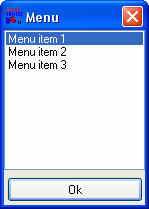
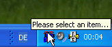
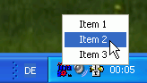

Menus
Yet, we already discussed possibilities to get data from the user. But this data was always freely defineable by the user. To let the user select a value from only a pre-defined range of values, RapidBATCH does also provide two powerful build-in dialog solutions that can be used for different purposes.
The best choice for simple menus, file-selections and other things is the LISTBOX-dialog. This dialog can be used in arbitrary ways, as a menu, a selection or to simply give an overview about something.
Very versatile and fast implementation of choices and menus: The LISTBOX-dialog!
LISTBOX expects, next to the return variable retrieving the selected item(s) from the list, two parameters, where the first one is the dialog title that is displayed in the title bar of the LISTBOX, and the second one is a so called list of items, to be displayed. In RapidBATCH, a list of items is a string, where each item is separated by a special separation character, which is, by default, the pipe-character (|). This character can be changed globally for all build-in instruction or function expecting such a list of items, using the pre-declared variable [std_sep]. Lists are used by various RapidBATCH build-in functionalities, especially later, when we go over to system operations and customized dialog programming. To assign an array of entries to a listbox, first call the function "arraytolist" that is provided within the ARRAY.RB extending functions library delivered with the RapidBATCH software package, and pass on the by this function returned string to LISTBOX.
As mentioned, the LISTBOX-function returns the value the user selected or, if the user hits the dialog's close-button in the upper-right corner or he does not take any selection and hit OK, the return value is an empty-string here again, equivalently to the already discussed dialog.
A simple script using a LISTBOX-dialog is the following one:
rem Simple menu using the LISTBOX:
listbox [selection] = 'Menu', 'Menu entry 1|Menu entry 2|Menu entry 3'
if [selection] = ''
echo 'No item has been chosen!'
else
echo 'Selected item is: ' # [selection]
endif
end
The LISTBOX is also very customizable. Equivalent to all of the already discussed RapidBATCH build-in dialogs, the appearance and look of the LISTBOX can also be modified using pre-declared variables RapidBATCH always provides by default. Using [ListBox_Width] and [ListBox_Height], the dialog's startup-size can changed to any desired size. [ListBox_X] and [ListBox_Y] allow the positioning of the dialog on the screen. Also here, the dialog is (defaultly) centered on the corresponding axis if these variables are set to '0'.
By setting [ListBox_Ok], the caption of the OK-button the dialog provides can be changed or, by setting [ListBox_Ok] to an empty-string, the whole button can be hidden.
To allow a multiple-choice selection within the LISTBOX at run-time, set the variable [ListBox_MultiSel] to '0'. If this variable is set to '0', the user can select more than one, or even all entries the LISTBOX is displaying. In such a case, the return variable will also be a list of those selected items, each separated by the pipe-character, which can be processed then.
The following script demonstrates the usage of the above discussed variables.
rem generate file list (a list is already returned by the FINDFILES-function)
findfiles [files] = 'C:\WINDOWS\*.*', '1'
rem provide a possibility to select files
[ListBox_Width] = '300'
[ListBox_Height] = '500'
[ListBox_MultiSel] = '0'
[ListBox_Ok] = 'Select!'
listbox [selection] = 'Please select one or more files:', [files]
if [selection] = ''
echo 'No item was selected!'
else
echo 'The selected files are (as a list): ' # [selection]
endif
end
Next to the LISTBOX-dialog, RapidBATCH does also provide another, very professional menu-dialog: The TRAYMENU! TRAYMENU allows to provide a program menu within the Windows task bar, at the left of the system-clock. When this dialog is called, an icon is displayed there. By right-clicking this icon, a menu with the at the TRAYMENU-call defined list of tiems will appear, as a menu. If the user selects one item, the dialog returns this item value. If the user left-clicks the task-bar icon, the dialog returns an empty string. With this dialog, it is possible to create scripts that permantently run in the background, just showing an icon in the taskbar which is the interface to the tasks the script purposively provides.
 
Simple, but effective and professional: The TRAYMENU-dialog!
Basically, TRAYMENU is used the same way like LISTBOX, because it nearly has the same parameters, also with nearly the same usage. The first parameter behind the return-variable retrieving the selected menu-entry, is the text that is displayed as a tooltip when the user moves the mouse over the traymenu-icon at run-time. If this is left empty, no tooltip will be displayed. The next parameter is the list of menu items, that are displayed in the menu when the user right-clicks the tray icon. This list is specified the same manner as at LISTBOX, as a string of items where each item is separated by pipe-characters. If this parameter is also left empty, no menu is build, and the icon can only be left-clicked to start an operation.
traymenu [item] = 'Please select an item...', 'Item 1|Item 2|Item 3'
if [item] ! ''
echo 'The selected item is: ' # [item]
else
echo 'You hit the icon!'
endif
end
By the way, to add a so called separator to a menu (a vertical line, visually grouping/separating different menu entry groups) can be inserted by just specifying a hyphen as one item entry in the item list that is passed to the function.
Example:
traymenu [item] = 'Please select an item...', 'Item &1|Item &2|Item &3|-|B&Quit'
By dafault, TRAYMENU uses always the default-icon of the application it is executed with as tray icon. In scripts ran by the interpreter, this is always the interpreter's RapidBATCH default-icon, in compiled scripts the icon linked to the executable file.
But in both cases, it is possible to use and display an external icon file, using the pre-declared variable [app_icon]. If [app_icon] is empty (this is the default value), the application's default icon is used, else, if [app_icon] is set to an external icon-filename (.ICO-file extension), this icon will be used within all dialogs RapidBATCH provides.
Example:
rem TRAYMENU with different icons
[app_icon] = '..\icons\orca1.ico'
traymenu [item] = 'Please select an item...', 'Item &1|Item &2|Item &3|-|B&Quit'
Copyright © 2000-2006 by J.M.K S.F. Software Technologies, Jan Max Meyer
All rights reserved.